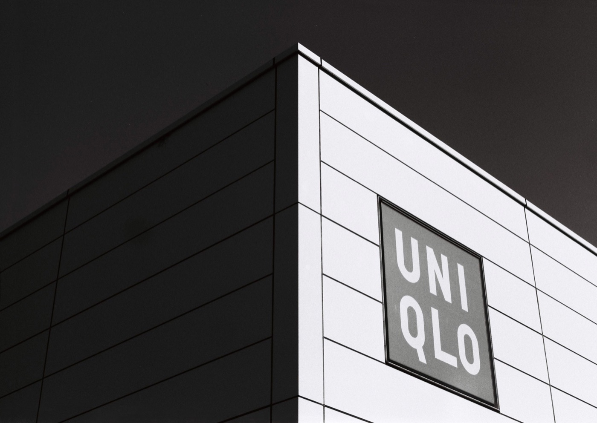
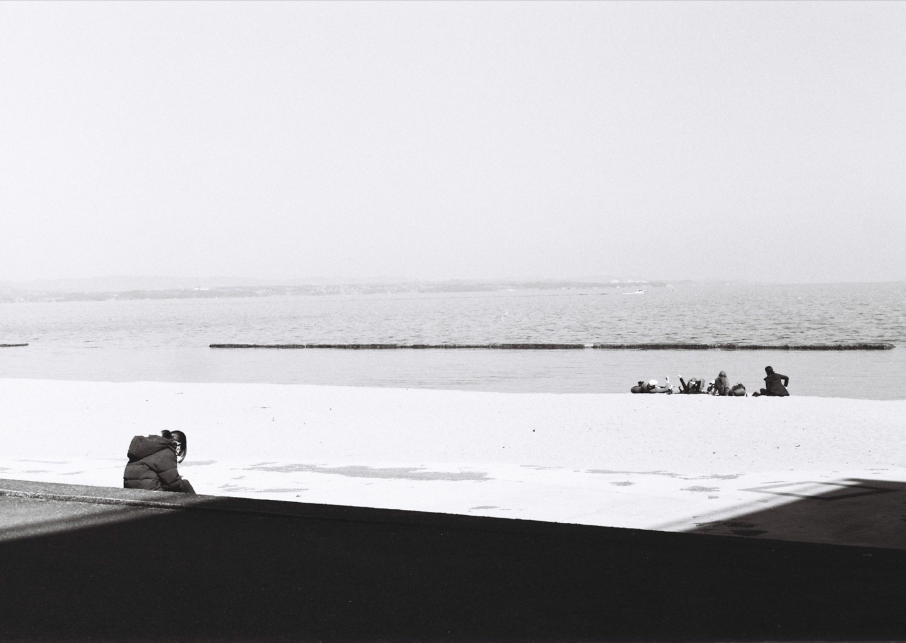

Japan Camera Hunter
在产
StreetPan 400 胶卷
- 感光度
- ISO 400
- 类型
- 全色性
- 颗粒
- 中等颗粒
- 尺寸
- 35mm
- 分类
- 传统颗粒
- 状态
- 在产
特性 / 手感 · Character
对红色敏感的特殊街拍卷，红色发亮、反差大，街拍党很爱，自带强烈戏剧感。
A red-sensitive street special. Red goes bright, contrast runs high - strong drama for street shooters.
适用场景 · Best for
街头 高反差
使用感受
爱它的人称赞其独特的“极端”风格。JCH StreetPan 400 是一款为街拍而生的、风格化的工具。它的高反差、极细颗粒和独特的红光感光能力，使其成为追求强烈视觉风格摄影师的心头好。但它的停产也意味着，如果你被它的独特魅力吸引，现在可能是入手体验的最后机会了。
参考价格 · Price
停产卷通常只有二手价 · 价格随市场波动，仅供参考
全新 New
135约¥110–140
120约¥125–180
二手 Used
135待补
120待补
实拍样片


© 安藤